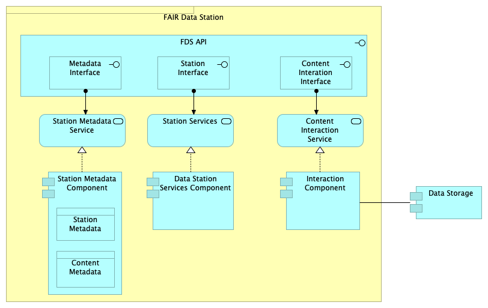
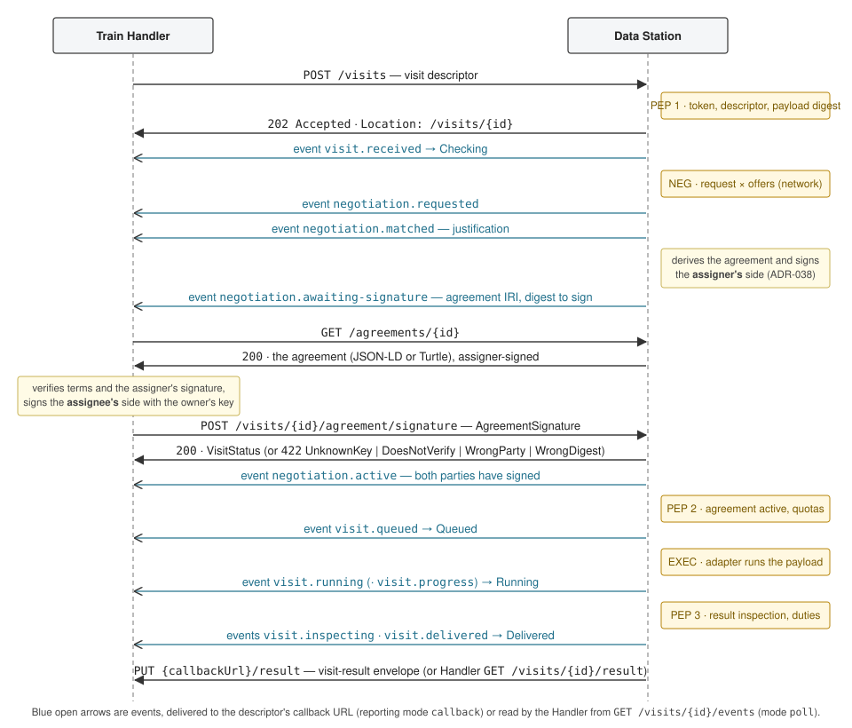

1. Introduction
The FAIR Data Train (FDT) is a FAIR-based platform framework that aims at guaranteeing a specific level of interoperability among its participant elements. It defines a set of application types and their expected behaviours to support the findability, accessibility, interoperability and reusability of data following the FAIR principles [FAIR-PRINCIPLES]. The FDT follows the analogy of a train system with two main elements, stations and trains. Data Stations make data (or other kinds of digital objects) available and publish metadata about themselves and about their content. Trains represent analysis or processing algorithms that are sent to Data Stations to process the data where it is: the computation travels to the data, and the data stays. A registry indexes the metadata the stations publish, so that a client can find out which station holds which data before sending anything anywhere.
In this document, data means not only the content of artefacts such as databases, tables and graphs, but also other kinds of digital objects such as controlled vocabularies, ontologies and models; unless otherwise stated the terms are used interchangeably. The FAIR Data Train architecture defines a number of key capabilities:
-
provisioning of metadata to describe digital objects;
-
a common representation format [RDF11-CONCEPTS] to express the metadata in a machine-actionable manner;
-
a common approach to inform clients on how to navigate through the metadata structure;
-
a common representation format [SHACL] for the metadata schemas — and, since version 0.2, for what a train requires of a station’s data and what a station’s data conforms to, which is how a station is selected for a train;
-
a common way of describing how data sources support interactions with their content, in terms of metadata properties of the station;
-
a common way to represent how client applications interact with data: the interfaces and protocols by which a station accepts an incoming train, negotiates the terms under which it may run, runs it, and decides what may leave.
The main goal of the FDT general architecture is to define a set of behaviours, interfaces and protocols to improve interoperability among data sources and data processing services. To fulfil this goal, the FDT specifications help developers build new applications, or extend existing ones, so that they can take part in the FAIR Data Train ecosystem. The envisioned scenario is one with a multitude of trains, stations and client applications, independently created and able to interact with one another because they all follow the same base guidelines — interfaces, protocols and representation formats.
1.1. Purpose
The purpose of this document is to present the general architecture of the FAIR Data Train: its roles, its components, how they interact and the standards they rest on. It is primarily intended as a reference for developers willing to add FDT functionality to their existing applications, or to develop their own implementation of an FDT component. Knowledge of RDF, SHACL, ODRL and REST APIs is required to follow it.
This document is the entry point to a set of specifications. Where a part of the architecture is specified in full elsewhere, this document says what the part is for and points at the specification that governs it. In version 0.2 that is one document: the FDT Visit Protocol [FDT-VISIT-PROTOCOL], which specifies the conversation between a Data Station and a Train Handler for one visit of one train.
1.2. How this document relates to the reference implementation
This section is non-normative.
A reference implementation of the ecosystem exists [FDT-COMMONS] and this version of the architecture was written against it: every component in § 3 Components except the alignment station has a running implementation, the interactions of § 4 Interactions are exercised end to end by its test suites and testbed, and the normative artefacts of the Visit Protocol — JSON Schemas, OpenAPI documents, SHACL shapes and the fixtures every component is tested against — are the contracts that implementation is built on. The architectural decisions behind the text are recorded as Architecture Decision Records [FDT-ADR] and are cited here by number (ADR-nnn) where a reader may want the reasoning rather than the result.
1.3. Changes since version 0.1
This section is non-normative.
Version 0.1 (10 July 2025) described the FDT as it was first conceived. Version 0.2 brings it up to date with what has since been built, and the following names and ideas changed:
| Version 0.1 | Version 0.2 | Why |
|---|---|---|
| Personal Gateway | Individual Gateway | The controller-side agent serves one controller — a company or a natural person — across every station holding their data, not only persons. |
| Station Directory, "a special kind of Data Station" | FDT Registry | The registry is an index over what stations and depots publish and is not a trust anchor: nothing may be granted on the strength of an entry, and it is not a station. |
| Train Provider | Train Creator | The role is the party that created a train and is answerable for it. The ontology keeps fdt-o:TrainProvider as the IRI with "Train Creator" as its label, because a published IRI is a promise.
|
| — | Train Depot | Trains are contracted assets with an identity, a creator’s offer and a verifiable payload. The Depot is the authority for a train; a station resolves a train there before running it. |
| — | Linkage Station, Alignment Station | Two station types for the two cross-organisational services a multi-station analysis needs: identifier translation between pseudonym spaces, and vocabulary alignment. |
| — | Visit Protocol [FDT-VISIT-PROTOCOL] | The Content Interaction Interface of version 0.1 was a heading. It is now a specification: how a train is dispatched, how an agreement is negotiated and signed by both parties on arrival, how every decision is reported, and how a result leaves. |
| — | Conformance criteria | Version 0.1 named no requirement an implementation could be checked against. § 6 Conformance now defines conforming Data Stations, Train Handlers and Linkage Stations by numbered criteria, each tied to the shape, checker or harness that decides it. |
| Agreement signed by the station | Agreement signed by both parties | A record kept by one party and signed by that party alone proves nothing to a third party. Each party signs the same canonical form. |
The three interface groups of the Data Station are unchanged in name; § 3.1 Data Station now says what each one is.
2. Roles
The parties of an FDT ecosystem, and what each is answerable for. A party may play several roles; a role may be played by an organisation or, where the deployment admits it, by a natural person.
| Role | Party | Responsibility |
|---|---|---|
| Data Controller | An organisation or a natural person with authority over data hosted at one or more stations | Authors the access conditions over their data, as ODRL offers; approves agreements where a person is required to; may revoke an agreement they granted. The identified assigner of every agreement over their resources. Distinct from the Station Owner (ADR-011): hosting data is not controlling it. Acts through a station’s console or, across stations, through an Individual Gateway.
|
| Station Owner | The organisation (or, in the personal profile, the person) operating a station | Sets station-wide policy — quotas, permitted mechanisms, networks served — orthogonal to the controllers' conditions. The effective decision over a request is the conjunction of the controller’s offer and the owner’s policy. |
| Data Consumer / Train Owner | The party accountable for a run | The assignee of every agreement a run concludes; submits trains through a Train Handler and receives inspected, non-personal results.
|
| Train Creator | The party that created a train and publishes it | Offers the train as a contracted asset through a Train Depot, under their own licence; signs what they publish. When a creator sends their own train, they also play the Train Owner role. |
| Train Handler operator | Runs dispatch and orchestration infrastructure | Not a party to any agreement; may hold aggregate results only (ADR-015). |
| Registry operator, Train Depot operator | Run a registry or a depot | A registry harvests and indexes; it is never a trust anchor. A depot is the authority for the trains it holds — bytes, digests, declared parameters and output, the creator’s offer and keys. |
| Linkage service provider, Alignment service provider | Operate linkage or alignment stations | Trusted third parties for identifier translation; vocabulary and mapping services. |
| Network governance authority | One per FDT network | Participation rules, evidence categories, trusted identity issuers and trust anchors for the network (ADR-017). |
3. Components
![The components of an FDT ecosystem in four groups. Consumer side: the Train Handler and the Train Creator's publications. Controller side: the Individual Gateway. Federation services: the FDT Registry, the Train Depot and the governance function. Data Stations, which may belong to several networks: the Data Station, the Linkage Station and the Alignment Station. Underneath all of them, fdt-commons: the shared contracts every component validates against. Solid lines are version 1 interactions; dotted lines are version 2 or governance.](images/fdt-ecosystem-components.svg)
| Component | Responsibility |
|---|---|
| Data Station | Hosts data; publishes FAIR metadata about itself and its content; receives trains; negotiates an agreement per visit on arrival; enforces policy at three checkpoints; executes the train through an interaction-mechanism adapter; returns the inspected result, or lets inspected state travel onward. § 3.1 Data Station. |
| Train Handler | The consumer-side agent: selects and parametrises a train, composes a plan, dispatches visits to stations (push or poll), orchestrates multi-station itineraries, collects the non-personal results and provenance, and shows the run as it happens. The Handler owns the run; the station owns the visit. § 3.2 Train Handler. |
| Individual Gateway | The controller-side agent for one controller across every station hosting their data: author and revoke access conditions, review the agreements concluded over their data and the audit slice that touched it, receive and decide approval requests, exercise opt-out. § 3.3 Individual Gateway. |
| FDT Registry | A metadata registry: harvests and indexes what stations and depots publish, and answers which stations hold the data a train needs. An index and never a trust anchor. § 3.4 FDT Registry. |
| Train Depot | The authority for a train and a catalogue of train offers: payload bytes and digest, declared parameters and output, the creator’s licence as an ODRL offer and the creator’s signing keys. § 3.5 Train Depot. |
| Linkage Station | A station whose interaction mechanism is identifier translation between organisational pseudonym spaces; visited as a hop under its own agreement; wraps an existing trusted third party. § 3.6 Linkage and Alignment Stations. |
| Alignment Station | A station or service offering vocabulary and mapping alignment — code systems, administrative units — consulted by trains or visited as a hop. § 3.6 Linkage and Alignment Stations. |
| Governance function | Per network: onboarding, evidence, trusted issuers and trust anchors, rule publication; exposes machine-readable membership so stations and handlers can check who belongs to which network. § 3.7 Networks and governance. |
| fdt-commons | The shared contracts: the FDT ontology and profiles, SHACL shapes, JSON-LD contexts, JSON Schemas and OpenAPI documents, state machines and their mapping to the Dataspace Protocol, and the fixtures every component is tested against. § 3.8 Shared contracts. |
Trains are packaged, executable interactions of four families — query, API, script and container — and are assets, not datasets: a train is something a station runs, not something it hosts (ADR-020). A train has an identity and an offer of its own, carries a payload with a digest, and declares the data it needs (as a SHACL model) and the output it produces (as a JSON Schema).
3.1. Data Station
Since the purpose of the FAIR Data Train architecture is to define a set of desired behaviours that applications expose and support, the definition of the Data Station is the definition of its interface. The interface is divided into three groups, as depicted in the figure below: the Metadata Interface, the Station Interface and the Content Interaction Interface. Each group exposes the interfaces of a number of services the station provides, and the interaction with the data happens only through the station’s interaction component, which is the one component that connects to the data storage.

3.1.1. Metadata Interface
The Metadata Interface publishes what the station holds and on whose terms, as RDF, following the FAIR Data Point specification [FDP] for the metadata structure and its navigation. A station publishes:
-
a catalogue [VOCAB-DCAT-3] of the hosted datasets it serves and of the dataset parts a controller offers in their own right, each with its distributions per interaction mechanism, its
dcat:theme, and the ODRL offer [ODRL-MODEL] that states the controller’s access conditions over it; -
for each dataset or part, what its data conforms to: a SHACL shape [SHACL], served by the station alongside the catalogue. This is what makes station selection answerable — a train declares the data it needs as a SHACL model, and a station matches when the shapes it publishes cover that model (ADR-030). Where the station’s data is not natively RDF, the shape is generated from the mapping the dataset declares [RML] and the mapping is published too.
Publishing a catalogue entry grants nothing. A catalogue says what exists and under which terms; every access is still negotiated on arrival against the offer, per visit.
3.1.2. Station Interface
The Station Interface publishes the station’s self-description: its type and the interaction
mechanisms it supports, the networks it is a member of and the governance authority of each, the
dispatch modes it accepts (push, poll, or both), the protocol versions it implements, and links to
its metadata and catalogue. The self-description is what a Train Handler reads to know whether a
station will accept a train from a given network and how to reach it: the station’s dispatch
endpoint is a dcat:DataService whose dct:conformsTo names the Visit Protocol version.
3.1.3. Content Interaction Interface
The Content Interaction Interface is the Visit Protocol [FDT-VISIT-PROTOCOL]: the conversation between a Train Handler and a Data Station for one visit — one train, at one station, under one agreement. It covers dispatch, negotiation on arrival, the signatures of both parties, every checkpoint decision as an event, execution progress, result delivery and the hand-over of onward state. It is deliberately the only interface a station has to implement to take part in any itinerary pattern. A Data Station conforms to this architecture by conforming to that protocol as a station.
Behind the interface a station enforces policy at three checkpoints, with negotiation between the first two:
| Checkpoint | Decides |
|---|---|
| PEP 1 — arrival | Is the caller who they say, is the descriptor valid, is the payload the one the train’s depot offer names (by digest), does this station support the mechanism. A failure here rejects the visit. |
| NEG — negotiation | Is the request satisfiable under the controller’s offer for the visit’s network and the owner’s policy. Produces an agreement, or asks a person where a machine may not decide, or refuses — a controller’s decision, never a checkpoint’s. |
| PEP 2 — before execution | Is the agreement active and signed by both parties, is it about this visit, do the station’s quotas allow the run. |
| PEP 3 — after execution | Does the result conform to the train’s declared output, does every duty of the agreement hold on it, what class of state may leave and where to. A failure here rejects the result; nothing leaves. |
3.2. Train Handler
The Train Handler is the consumer’s agent. It resolves a train from a Train Depot, asks the registry which stations hold the data the train needs, composes a plan — the train, its parameter values, an itinerary and the consumer’s purpose as an ODRL request template — and runs it: one run is one execution of a plan, decomposed into visits, each one train execution at one station under one agreement. The Handler dispatches each visit by push or, for a station that accepts no inbound connection, by letting the station poll for it; follows the station’s event stream; signs the assignee’s side of each agreement with the train owner’s key; applies the plan’s failure policy to each outcome; and assembles the run record and the completeness statement — for every intended station, its outcome in the protocol’s own words, its cause and the station’s stated reason.
The Handler holds non-personal, aggregate results only (ADR-015). Record-level data never leaves the station that hosts it, except to another station under an agreement.
3.3. Individual Gateway
The Individual Gateway is one controller’s agent across every station hosting data they control. Through it a controller authors access conditions once and publishes them to each station, reviews the agreements concluded over their data and the slice of each station’s audit trail that touched it, receives approval requests where a person must decide and decides them, and exercises revocation and opt-out. A controller may also act directly at a station’s own console; the Gateway is what makes the same controller’s view coherent across stations.
3.4. FDT Registry
The registry harvests the self-descriptions and catalogues that stations and depots publish and indexes them: stations by interaction mechanism, network, theme, the shapes their data conforms to and the join keys they offer; trains by what they require. Its central question is which stations hold the data this train needs, answered by structural coverage of the train’s data requirement by a station’s published shapes — and, for a near miss, by naming the property a station lacks. A registry is an index: nothing may be granted on the strength of an entry, a station may be indexed by several registries, and a Handler acts on what a station publishes, not on what a registry harvested.
3.5. Train Depot
The Train Depot is the authority for a train. It holds the payload bytes and their digest, the train’s declared parameters, data requirement and output, the creator’s licence over the train as an ODRL offer, and the creator’s public signing keys; it publishes them as a catalogue of train offers. A station resolves a train at the Depot before anything runs and verifies that the payload it was handed is the one the Depot describes. Taking a train from a Depot is itself a two-party agreement — the creator’s licence, signed by the creator’s Gateway and by the would-be owner — and a Depot signs nothing in anybody’s name.
3.6. Linkage and Alignment Stations
Both are ordinary stations, visited with the same protocol under their own agreements. A Linkage Station’s mechanism is identifier translation: it receives a list of pseudonyms in one organisation’s space and returns the corresponding list in another’s — one side only, never the pair, and in an order that discloses no correspondence — so that two stations can be joined at the level of the individual by nobody but the trusted third party. An Alignment Station offers vocabulary and mapping services — code systems, spatial and administrative units — that a train consults or visits as a hop.
3.7. Networks and governance
An FDT network is a set of participants that accept one governance authority’s rules and trust anchors. A station frequently serves several communities at once, so a station may belong to several networks with different governance (ADR-017). The station’s self-description lists its memberships; policy is evaluated per network, because a controller’s offer may differ per network; every agreement records the network it was concluded under; and identity is issued by network authorities, not by the FDT — in version 1 through federated OpenID Connect providers the network trusts [OPENID-CONNECT-CORE].
A network also states whether a station in it may conclude a negotiation without a person. Where it may not, the station still evaluates the request and produces a recommendation with its evidence, and a person decides; where a machine may not grant, it may not refuse either (ADR-032).
3.8. Shared contracts
Interoperability rests on shared contracts, not on shared code. fdt-commons [FDT-COMMONS]
holds the FDT ontology [FDT-O] and the ODRL and run-description profiles; the SHACL shapes that
every published document and every arriving request is validated against; the JSON Schemas and
OpenAPI documents of the Visit Protocol and of the other component interfaces; the state machines
and their mapping to the Dataspace Protocol [DSP]; and the fixtures every implementation is
tested against, including counter-examples that must fail. No component redefines a term, shape,
schema or endpoint that exists there, and a change to a contract is made there first.
4. Interactions
4.1. Plan, run, visit
A plan names a train, its parameter values, an itinerary — the pattern, the entry stations or a registry query that selects them, phases and dependencies, stop conditions, budget — and the consumer’s purpose as an ODRL request template. A run is one execution of a plan. A visit is one train execution at one station under one agreement. Every itinerary pattern — a single visit, fan-out over many stations, a sequence, a discovery chain that learns where to go next from what it finds, iterative rounds, two-phase selection, composition — decomposes into visits, which is why the Visit Protocol is the only interface a station needs.
4.2. Agreements, per visit, signed by both parties
Every visit — including a visit to a linkage or alignment station — is governed by its own ODRL agreement, negotiated on arrival (ADR-014). The station matches the train’s request against the controller’s offer for the visit’s network and the owner’s policy and derives the agreement: it grants exactly the actions requested that the offer permits, carries every usage constraint bounded by what was offered, carries the offer’s prohibitions and duties verbatim, records the eligibility facts it established as evidence rather than as live terms, and pins the offer, the request and the train’s payload by digest. There is no counter-offer: narrowing is always permitted and widening never is.
The agreement is then signed by both parties over the same canonical form: the station signs the assigner’s side — with the controller’s key where they hold one, otherwise as the controller’s agent, and the signature says which — and the Train Handler signs the assignee’s side with the train owner’s key. An agreement only one party has signed is not an agreement, and nothing runs under one. Both parties keep a pinned copy; neither can rewrite history unnoticed by the other, and a third party holding the document can verify it without asking either.
4.3. Dispatch, checkpoints and outcomes

A visit is dispatched by push — the Handler posts a visit descriptor to the station — or by poll — a station that accepts no inbound connection fetches the descriptors waiting for it from the Handler. Beyond the gateway the two are processed identically (ADR-004). The station then runs the visit through its checkpoints (§ 3.1.3 Content Interaction Interface), and every decision it takes is an event with a justification (ADR-027): the ordered event stream is the source of truth for what happened to a visit, for the Handler’s view of the run and for the audit trail a controller reads.
Every visit ends in exactly one of seven outcomes, and the words are part of the contract (ADR-026), because a completeness statement reports them to a data consumer verbatim:
| Outcome | Meaning | Whose |
|---|---|---|
| Delivered | The result passed inspection and left the station (possibly redacted to meet a threshold). | — |
| Refused | Access was declined at negotiation — by the controller’s standing conditions or by a person. | A controller’s decision, with their stated reason |
| Rejected | A checkpoint’s verdict on a document or a result: an invalid descriptor, a payload that is not the one offered, a result a duty forbids. | A checkpoint’s verdict; nobody decided anything |
| TimedOut | A person was asked and the wait ran out, or the Handler withdrew the visit. | Nobody decided |
| Failed | Machinery broke. | — |
| Revoked | The controller took the agreement out of force while the visit was queued or running. | A controller’s act over an agreement they granted |
| Skipped | The run never asked this station — a phase condition excluded it, a chain was pruned, the failure policy dropped it. | The Handler’s record; no station can report it about itself |
These are not shades of one fact. Reporting a controller’s refusal as a rejection tells a consumer their request failed a check when a person declined it; reporting a timeout as either puts a verdict in the mouth of somebody who never gave one. Implementations keep the vocabulary exact in code, logs and user interfaces.
4.4. State between hops
Three mechanisms carry state from one visit to the next, chosen per plan and constrained by the stations' policies (ADR-016): inside the train — a container or script train carries state, and the origin station’s PEP 3 judges what may leave with it; via the Handler — only non-personal state returns to the Handler and is re-injected as parameters; via a linkage station — only opaque pseudonyms cross an organisational boundary, translated by the trusted third party and handed to the next station by location and digest, never by value, so that the Handler holds a name and the bytes stay at the station that produced them.
5. Standards
This section is non-normative.
The FDT is built on open standards, and this table says how each is used — used where the reference implementation reads or writes it as specified, aligned where the FDT is designed to map onto it, declared where the architecture names it and the implementation does not yet exercise it.
| Standard | Where | Status |
|---|---|---|
| RDF 1.1 [RDF11-CONCEPTS], JSON-LD 1.1 [JSON-LD11] | All metadata, catalogues, self-descriptions, offers, requests and agreements; the Visit Protocol’s RDF payloads. | used |
| DCAT 3 [VOCAB-DCAT-3], FAIR Data Point [FDP] | Station catalogues (datasets, parts, distributions, services); the metadata structure and its navigation. | used |
| SHACL [SHACL] | Validation of every published document and arriving request; a train’s data requirement and a station’s data description, matched by coverage. | used |
| ODRL 2.2 [ODRL-MODEL] [ODRL-VOCAB] with the FDT profile | Access conditions (offers), requests, agreements and the derivation rule between them; the purpose vocabulary from DPV [DPV]. | used |
| PROV-O [PROV-O] | The run record: a run is an activity, its visits sub-activities, the merged result a derivation from the delivered visits. | used |
| JSON Schema [JSON-SCHEMA], OpenAPI 3.1 [OPENAPI] | The Visit Protocol’s three message types and every HTTP interface in the ecosystem. | used |
| OpenID Connect [OPENID-CONNECT-CORE], OAuth 2.0 Token Exchange [RFC8693] | Federated identity, trusted per network; the acting person carried as RFC 8693’s actor claim; a graded dispatch credential. | used |
| Ed25519 [RFC8032], JSON Web Key [RFC7517], RDF Dataset Canonicalization [RDF-CANON] | Signatures of both parties over the canonical form of an agreement and of a train’s submission; keys published as JWK sets. | used |
| RFC 9457 Problem Details [RFC9457] | Every error a component returns, carrying the FDT outcome word and the checkpoint. | used |
| Dataspace Protocol 2025-1 [DSP] | Agreement and visit lifecycles are mapped onto Contract Negotiation and Transfer Process states; the mapping is documentation in version 1 and a binding in version 2 (ADR-019). | aligned |
| RML [RML] | Where a station’s data is not RDF, the mapping its published shape is generated from. | declared |
| Verifiable Credentials | The identity model is kept credential-ready so that W3C Verifiable Credentials can replace bearer tokens without a schema migration (ADR-010); eligibility evidence is where they would first apply (ADR-031). | declared |
6. Conformance
6.1. Conformance classes
This document defines conformance for the two components every itinerary needs, and states what each must do beyond the Visit Protocol. The key words MUST, MUST NOT, SHOULD and MAY are those of [RFC2119]. The protocol-level requirements — dispatch, negotiation, signatures, checkpoints, events, envelopes, hand-over — are the Visit Protocol’s and are collected as numbered criteria there [FDT-VISIT-PROTOCOL]; the criteria below are the architecture’s own and are numbered apart so that a conformance claim can cite both without ambiguity.
- Conforming Data Station
-
A component that conforms to the Visit Protocol as a push-dispatch station or as a poll-dispatch station, and meets every criterion of § 6.3 Criteria for a Data Station.
- Conforming Train Handler
-
A component that conforms to the Visit Protocol as a Train Handler, and meets every criterion of § 6.4 Criteria for a Train Handler.
- Conforming Linkage Station
-
A conforming Data Station whose interaction mechanism is identifier translation, and which meets every criterion of § 6.5 Criteria for a Linkage Station.
Conformance for the Individual Gateway, the FDT Registry, the Train Depot and the Alignment
Station will be specified in their own documents as those are published; their interfaces exist
today only as OpenAPI documents and fixtures in fdt-commons [FDT-COMMONS], and a claim about
them is a claim against those artefacts.
6.2. How the criteria are checked
The criteria below are checked in the three ways the Visit Protocol defines: by schema — a
SHACL shape or JSON Schema in fdt-commons decides it, and the fixtures named are what an
implementation must accept and the counter-examples it must refuse, each with the message the
shape carries; by rule — a checker in fdt-commons/tools executes it over the fixtures
named; or by harness — a behaviour observable only against a live counterpart, for which no
third-party-runnable harness is yet published and the reference implementation’s test suites are
the only published evidence. The artefacts are those pinned by the Visit Protocol’s Appendix B.
6.3. Criteria for a Data Station
| Id | Requirement | Stated in | Checked by |
|---|---|---|---|
| DS-1 | A Data Station MUST conform to the Visit Protocol as a push-dispatch station, as a poll-dispatch station, or as both. | § 3.1.3 Content Interaction Interface | The Visit Protocol’s criteria. |
| DS-2 | A Data Station MUST publish a self-description typed fdt-o:DataStation stating its type, the interaction mechanisms it supports, the networks it is a member of with the governance authority of each, the dispatch modes it accepts, the protocol versions it implements and links to its metadata and catalogue; its dispatch endpoint MUST be a dcat:DataService whose dct:conformsTo names the Visit Protocol version.
| § 3.1.2 Station Interface | Schema — fdts:StationSelfDescriptionShape, fdts:MembershipShape, fdts:DataServiceShape (station-catalog.shapes.ttl) over the stations of network-and-stations.ttl. Harness for the live document.
|
| DS-3 | A Data Station MUST publish a catalogue typed fdt-o:StationCatalog, published by itself, listing the hosted datasets (fdt-o:HostedDataset) it serves and the parts (fdt-o:DatasetPart) a controller offers in their own right; every dataset and part MUST carry at least one distribution per interaction mechanism it is reachable by, an ODRL offer by its controller, and a dcat:theme that is a concept IRI.
| § 3.1.1 Metadata Interface | Schema — fdts:StationCatalogShape, fdts:DatasetShape, fdts:DatasetPartShape, fdts:GovernedDataThemeShape, fdts:MechanismDistributionShape, refusing dataset-without-offer.ttl, dataset-part-without-offer.ttl, theme-written-as-a-keyword.ttl, offer-whose-target-no-graph-describes.ttl (published-graph.shapes.ttl).
|
| DS-4 | For every dataset and part a Data Station MUST publish what its data conforms to — at least one SHACL node shape named by dct:conformsTo — and MUST serve those shapes beside the catalogue, so that a train’s data requirement can be matched against them by structural coverage.
| § 3.1.1 Metadata Interface, § 3.4 FDT Registry | Schema — fdts:DatasetShape refusing dataset-without-a-shape.ttl. Rule — coverage.py check against tests/coverage-expectations.json, which records the misses as well as the hits.
|
| DS-5 | A Data Station MUST follow the FAIR Data Point specification for the structure and navigation of its metadata. | § 3.1.1 Metadata Interface | Harness. |
| DS-6 | Publishing a catalogue entry MUST grant nothing: a Data Station MUST negotiate every access on arrival against the controller’s offer, per visit. | § 3.1.1 Metadata Interface, § 4.2 Agreements, per visit, signed by both parties | Harness (the Visit Protocol’s negotiation criteria). |
| DS-7 | A Data Station MUST evaluate the controller’s offers for the network a visit runs under and for no other, MUST record that network in every agreement, and MUST verify a dispatching party’s credential against the identity providers that network trusts. | § 3.7 Networks and governance | Schema — fdts:PolicyCommonShape (fdt-p:underNetwork required of every offer, request and agreement). Harness.
|
| DS-8 | In a network that states a station in it may not conclude a negotiation without a person, a Data Station MUST neither grant nor refuse by machine: it MUST evaluate, produce a recommendation with its evidence, and put the case to a person. | § 3.7 Networks and governance | Schema — fdts:NetworkShape refusing network-that-does-not-say-who-may-decide.ttl; the decision shapes of policy.shapes.ttl refusing automatic-agreement-naming-a-decider.ttl, human-decision-with-nothing-to-review.ttl. Harness.
|
| DS-9 | A Data Station MUST resolve a train at its Depot before anything runs and verify that the payload it was handed is the one the Depot describes; it MUST treat a train as an executable asset and MUST NOT treat it as a dcat:Dataset.
| § 3.5 Train Depot, § 3 Components | Schema — fdts:TrainOfferShape refusing train-typed-as-dataset.ttl. Rule — payloads.py check.
|
| DS-10 | A Data Station MUST enforce policy at the three checkpoints and MUST emit every decision it takes as an event with a justification; it MUST NOT change the state of a visit silently. | § 3.1.3 Content Interaction Interface, § 4.3 Dispatch, checkpoints and outcomes | The Visit Protocol’s criteria. |
| DS-11 | Record-level data MUST NOT leave a Data Station except to another station, under an agreement, by location and digest; it MUST NOT appear in a result, an artefact, an event or a justification. | § 3.2 Train Handler, § 4.4 State between hops | Schema — fdts:VisitShape refusing visit-record-level-onward.ttl. Rule — inspection.py check refusing record-level-onward.json.
|
| DS-12 | A Data Station MUST report every visit’s outcome in one of the seven words of § 4.3 Dispatch, checkpoints and outcomes, exactly, in its events, envelopes, logs and user interfaces. | § 4.3 Dispatch, checkpoints and outcomes | The Visit Protocol’s criteria. |
6.4. Criteria for a Train Handler
| Id | Requirement | Stated in | Checked by |
|---|---|---|---|
| TH-1 | A Train Handler MUST conform to the Visit Protocol as a Train Handler. | § 3.2 Train Handler | The Visit Protocol’s criteria. |
| TH-2 | Every plan a Train Handler runs MUST conform to the run-description shapes: a train, its parameter values, an itinerary with its pattern, a failure policy, an approval wait in days or less, and the consumer’s purpose as a request template; an open-ended pattern MUST carry a budget and a stop condition; a two-phase plan MUST carry the condition that selects the second phase’s stations. | § 4.1 Plan, run, visit | Schema — fdts:PlanShape, fdts:ItineraryShape, fdts:OpenEndedItineraryShape, fdts:TwoPhaseItineraryShape, fdts:FailurePolicyShape (run.shapes.ttl) over the plans of trains-and-plans.ttl and the plan-*.jsonld fixtures, refusing plan-discovery-without-budget.ttl, two-phase-whose-second-phase-selects-nobody.ttl, plan-approval-wait-of-one-month.ttl, plan-approval-wait-typed-xsd-duration.ttl.
|
| TH-3 | A station selector MUST state the data a station must hold, as a SHACL model, and a Train Handler MUST select stations by structural coverage of that requirement by the shapes each station publishes — acting on what a station publishes, never on a registry’s entry alone. | § 3.4 FDT Registry, § 4.1 Plan, run, visit | Schema — fdts:StationSelectorShape refusing selector-without-data-requirement.ttl. Rule — coverage.py check against tests/coverage-expectations.json. Harness.
|
| TH-4 | A Train Handler MUST dispatch query and API trains orchestrated only. | § 4.4 State between hops | Schema — fdts:QueryTrainCoordinationShape refusing plan-query-train-choreographed.ttl.
|
| TH-5 | A Train Handler MUST resolve a train at its Depot and dispatch only a train its owner holds under the creator’s licence, concluded as a two-party agreement signed by the creator and by the owner; it MUST NOT dispatch a withdrawn train. | § 3.5 Train Depot | Schema — train-offer.shapes.ttl (fdts:TrainOfferShape and the withdrawal shape of ADR-036) over train-taken.ttl, refusing train-taken-from-someone-who-did-not-write-it.ttl, train-offer-assigned-by-its-depot.ttl, train-withdrawn-by-nobody.ttl; Rule — derivation.py refusing depot-signed-the-creators-side.ttl. The Depot interface itself is specified only by train-depot-api.yaml and protocol/train-publication.md until its document is published.
|
| TH-6 | A Train Handler MUST hold non-personal, aggregate results only — envelopes, events, aggregates and the names of hand-overs — and MUST NOT store record-level data. | § 3.2 Train Handler | The Visit Protocol’s criteria. Harness. |
| TH-7 | A Train Handler MUST produce a completeness statement for every run that did not deliver from every intended station, naming every intended station and, for each, its outcome in the seven words verbatim, its cause and the station’s stated reason. | § 3.2 Train Handler, § 4.3 Dispatch, checkpoints and outcomes | Schema — fdts:RunShape, fdts:CompletenessShape refusing run-partial-without-completeness.ttl; run-state.schema.json over run-state-two-phase.json. Harness.
|
| TH-8 | A Train Handler MUST record each run as PROV-O provenance: the run an activity, its visits sub-activities, the merged result a derivation from the delivered visits. | § 3.2 Train Handler, § 5 Standards | Harness. No shape in fdt-commons 0.75.0 constrains the run record beyond fdts:RunShape; this is a recorded gap of the conformance material.
|
| TH-9 | A Train Handler MUST visit under its own credential, issued by a provider the visit’s network trusts, and MUST NOT forward a consumer’s credential to a station. | § 3.7 Networks and governance | The Visit Protocol’s criteria. |
6.5. Criteria for a Linkage Station
| Id | Requirement | Stated in | Checked by |
|---|---|---|---|
| LS-1 | A Linkage Station MUST be typed fdt-o:LinkageStation in addition to fdt-o:DataStation, MUST publish a catalogue, and MUST publish a dcat:DataService declaring the identifier-translation mechanism.
| § 3.6 Linkage and Alignment Stations | Schema — fdts:LinkageStationServiceShape refusing linkage-station-that-publishes-no-catalogue.ttl, linkage-station-that-publishes-no-translation-service.ttl.
|
| LS-2 | A Linkage Station MUST be visited as a hop under its own agreement, through the Visit Protocol. | § 3.6 Linkage and Alignment Stations, § 4.2 Agreements, per visit, signed by both parties | Schema — visit-descriptor-ttg-hop3.json, visit-result-ttg-hop2.json. Harness.
|
| LS-3 | A translation MUST return the identifiers of one pseudonym space only and never the pair, in an order that discloses no correspondence with the order asked, and the count it reports MUST be the count it released. | § 3.6 Linkage and Alignment Stations | Schema — translation-envelope.schema.json over translation-result-ttg-hop2.json. Rule — inspection.py check refusing translation-that-returns-the-space-it-was-given.json, translation-in-the-order-it-was-asked.json, translation-whose-count-is-not-what-it-released.json.
|
| LS-4 | A Linkage Station MUST hand translated state to the next station by location and digest and never by value. | § 4.4 State between hops | The Visit Protocol’s criteria (onward.handedOverDigest, the inbound rules).
|
6.6. Conformance statement
An implementation claims conformance to this architecture by stating the class claimed, the
Visit Protocol conformance statement it rests on, the fdt-commons version and commit it was
validated against, and, for each criterion above, that it accepts the fixtures named and refuses
the counter-examples named with their recorded messages, or the evidence it offers where only a
harness can decide. The reference implementation is the only implementation that can make a
third-party-verified claim today, and this document says so rather than imply otherwise.